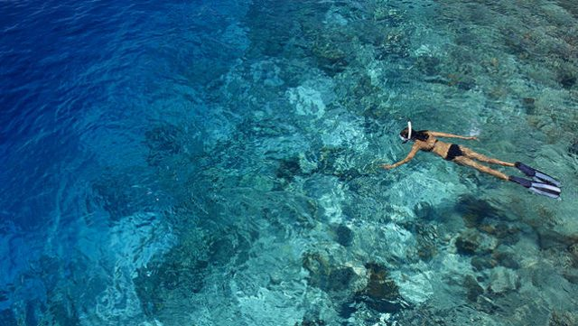

Tourism is the largest economic industry in the Maldives, as it plays an important role in earning foreign exchange revenues and generating employment in the tertiary sector of the country. The archipelago of the Maldives is the main source of attraction to many tourists visiting the country worldwide.

Most visitors arriving to the Maldives on short term basis, were from the following countries of nationality:
Foreign tourist arrivals
| Rank | Country | 2017 | 2016 | 2015 |
| 1 | China | 306,530 | 324,326 | 359,514 |
| 2 | Germany | 112,109 | 106,381 | 105,132 |
| 3 | United Kingdom | 103,977 | 101,843 | 92,775 |
| 4 | Italy | 88,848 | 71,202 | 65,616 |
| 5 | India | 83,019 | 66,955 | 52,368 |
| 6 | Russia | 61,931 | 46,522 | 44,323 |
| 7 | France | 42,365 | 40,487 | 42,024 |
| 8 | Japan | 41,133 | 39,894 | 39,244 |
| 9 | United States | 39,180 | 32,589 | 29,308 |
| 10 | South Korea | 34,808 | 29,580 | 33,001 |
| Total | 1,389,542 | 1,286,135 | 1,234,248 |
The Maldives remained largely unknown to tourists until the early 1970s. Only 185 islands are home to its 300,000 inhabitants. The other islands are used entirely for economic purposes, of which tourism and agriculture are the most dominant. Tourism accounts for 28% of the GDP and more than 60% of the Maldives' foreign exchange receipts. Over 90% of government tax revenue comes from import duties and tourism-related taxes.
According to the Ministry of Tourism, the emergence of tourism in 1972 transformed the economy, moving rapidly from dependence on fisheries to tourism. In just three and a half decades, the industry became the main source of income. Tourism was also the country's biggest foreign currency earner and the single largest contributor to the GDP. As of 2008, 89 resorts in the Maldives offered over 17,000 beds and hosted over 600,000 tourists annually.
Most visitors arrive at Malé International Airport, on Hulhulé Island, adjacent to the capital Malé. The airport is served by flights to and from India, Sri Lanka, Doha, Dubai, Singapore, Istanbul, and major airports in South-East Asia, as well as charters from Europe. Gan Airport, on the southern atoll of Addu, also serves an international flight to Milan several times a week. British Airways offers direct flights to the Maldives around 2–3 times per week.